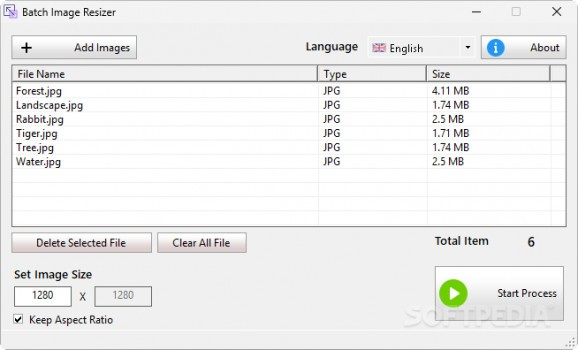

Resize multiple images in bulk with support for various popular formats and resolutions.
Batch Image Resizer is a simple and effective solution for resizing multiple images at once. Whether you're preparing photos for web uploads, adjusting resolutions for printing, or standardizing sizes for presentations, this tool allows you to do so quickly and reliably.
The application supports a range of popular image formats, including JPEG, PNG, BMP, and GIF, ensuring broad compatibility with most photo collections. Users can input a target resolution for their images and choose whether to preserve the original aspect ratio to prevent distortion.
With a clean interface and minimal configuration, the resizing process is both fast and easy to perform. The utility is particularly well-suited for users who need to handle large volumes of images without manually adjusting each file.
Batch Image Resizer prioritizes functionality and efficiency, making it a great addition to any workflow involving visual content management.
Resize multiple images at once to save time and reduce repetitive work.
Define your desired width and height with the option to maintain aspect ratio.
Compatible with common image formats including JPEG, PNG, BMP, and GIF.
